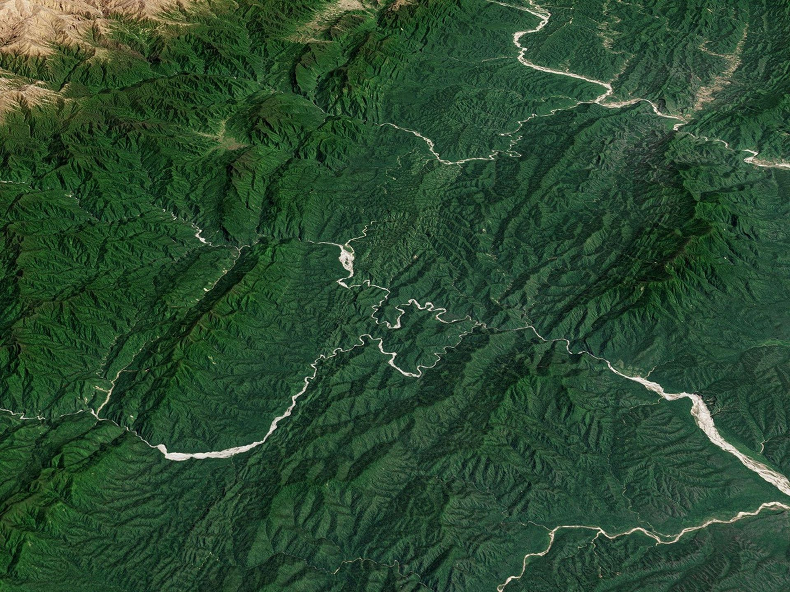
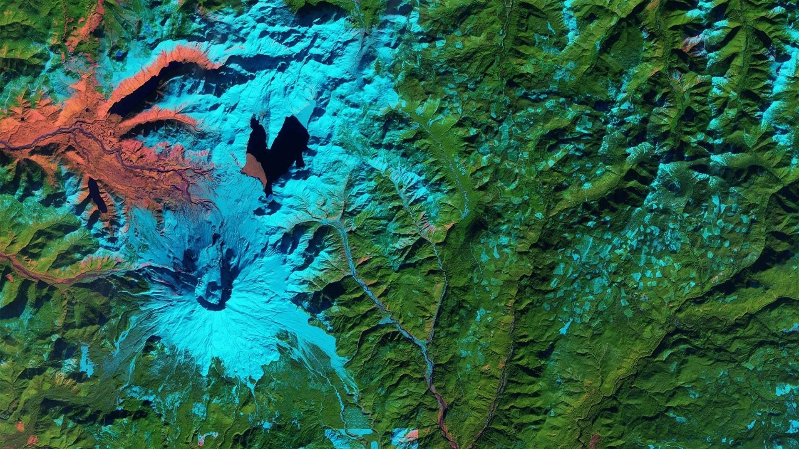
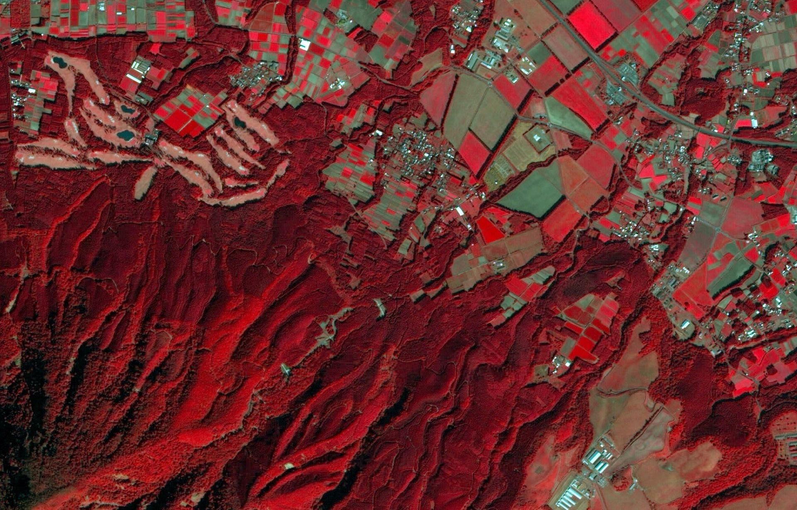
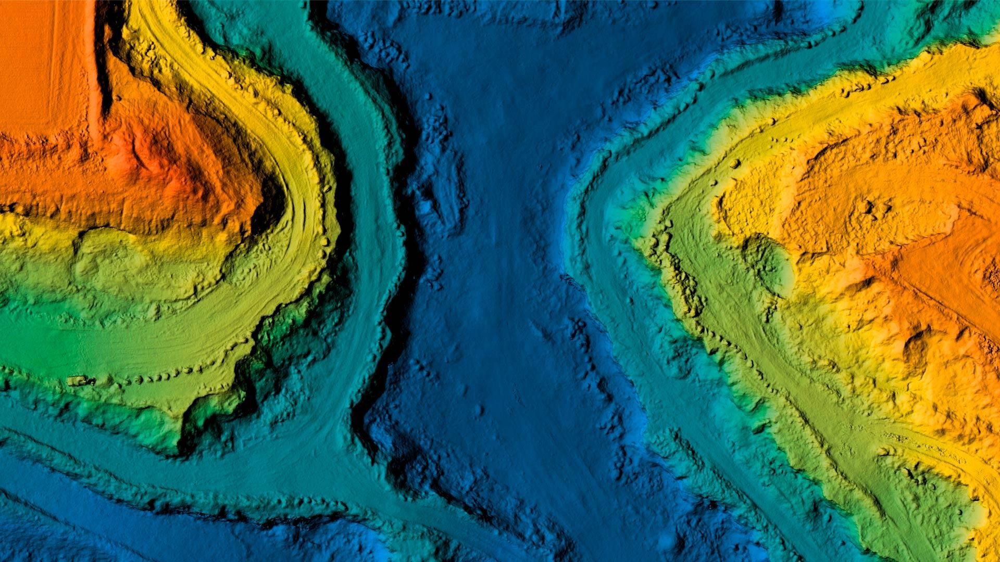
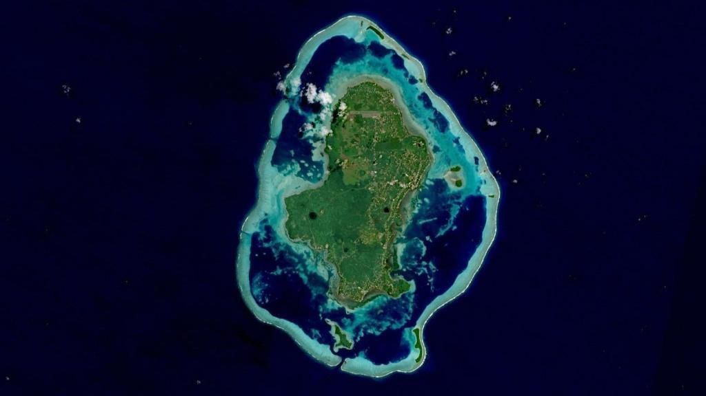

Mapping a changing planet
Understanding how and why landscapes change,
using satellites, spatial analysis and maps





Understanding how and why landscapes change,
using satellites, spatial analysis and maps